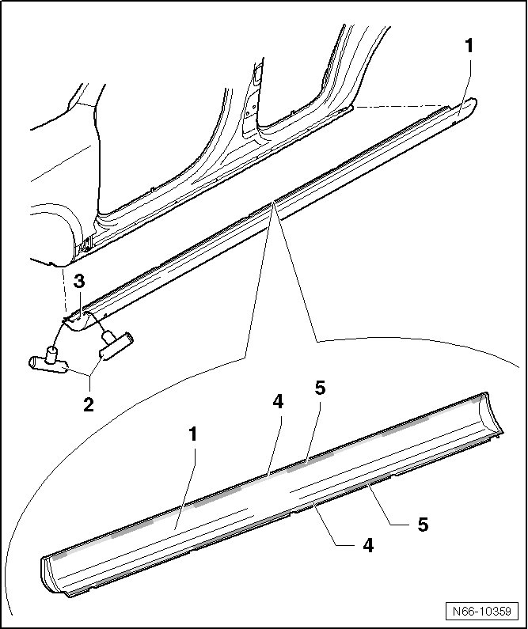

Sill Extension Assembly Overview, R-Line
Wheel Housing, Fender and Sill Panel Extensions
Sill Extension Assembly Overview, R-Line
• The sill extension must be replaced after it has been removed.
• Removal and installation is described only for the left-hand side. Removing and installing on the right side is identical.

1 Extended sill panel
• Material PUR - GF 17
2 Pull handle (V.A.G 1351/1)
• Quantity: 2
3 Cutting wire (357 853 999 A)
4 Double sided adhesive tape
• Top and bottom
5 Adhesion points
• 2K adhesive (DA 004 600 A2)
• Top and bottom